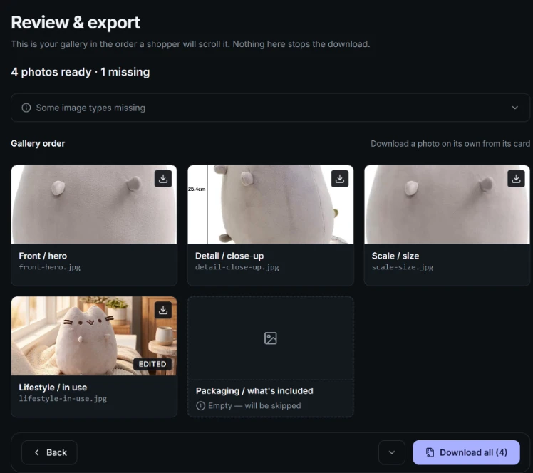
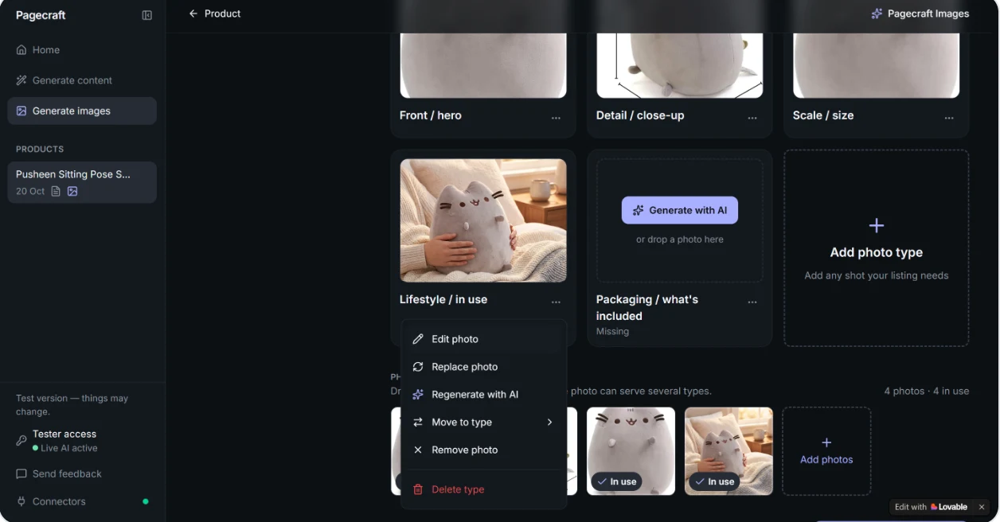
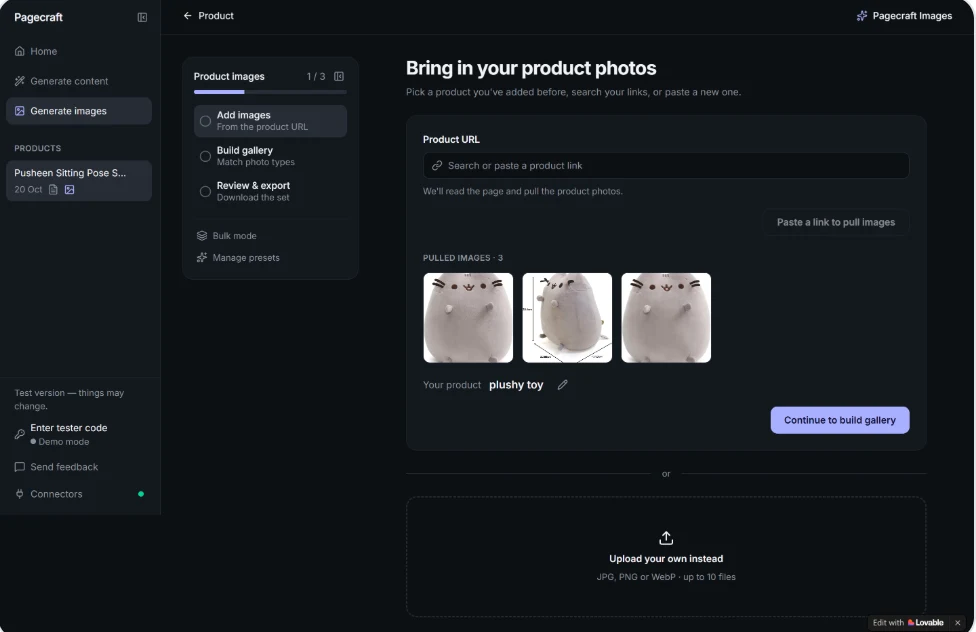
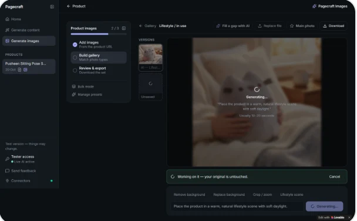
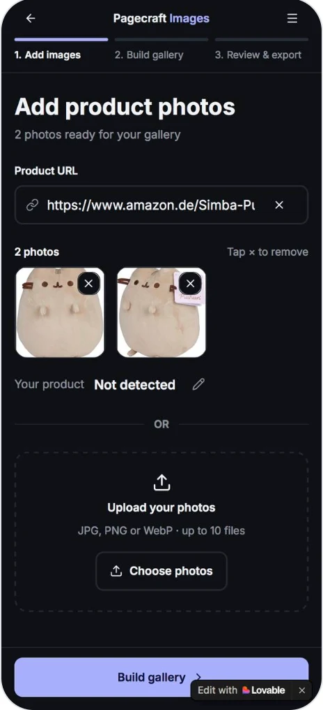
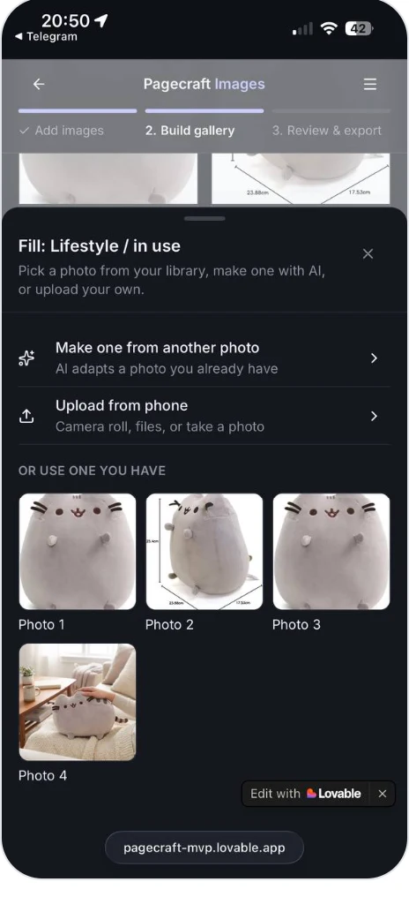
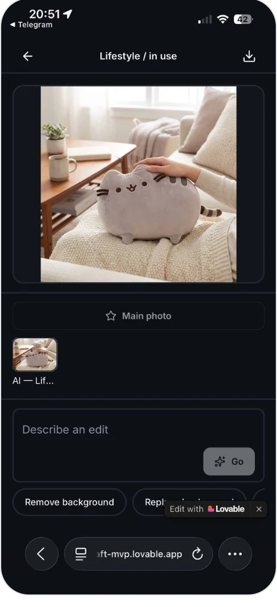

Different products need different photos. A skincare serum needs a shot of its ingredients. A plush toy needs a close-up of the fabric. Shoppers use these photos to answer the questions they'd ask in a shop: what it looks like, how big it is, what's included, and how it's used.
Most small sellers don't have that set. They have two or three photos, often pulled from a supplier page, and no studio to shoot the rest. So listings go live with gaps.
PageCraft already wrote product-page copy from a link. This feature does the same for images: reuse what the seller has, from their files or a link, and fill in the rest with AI based on what that type of product needs.
02 · Process
How it was made
01 Define
Map photo needs
Which shots each product type needs. Result: 10 category shot lists.
02 Structure
Shape the flow
Three steps. Photos in a library, matched to shot types.
03 Wireframe
Lo-fi, every state
Desktop and mobile, clickable: idle, loading, error, and success.
04 Build
Ship it in Lovable
Built it myself, with live AI image editing.
05 QA
QA script
Run against the live build before any user sees it.
06 Test
5 + 5 sellers Up next
Two moderated usability rounds.

Wireframe · Add imagesBuilt · Add images
03 · Features
What the tool does
01
Pull photos from a link
Paste a product URL, or upload your own.
02
Know what shots you need
Each product type gets its own shot list.
03
Reuse what you have
One photo can fill several shots.
04
Fill gaps with AI
Generate any missing shot in one click.
05
Edit with a prompt
Change a background, crop, or set a scene.
06
Keep the original
Nothing is saved until you choose to save it.
07
Export the set
Get numbered files, ready for Shopify.
04 · Screens
Screen walkthrough
Step 1
Add images
The link comes first because the seller's product is usually listed already. That's the same URL PageCraft uses for copy. The pull button stays disabled until there's a URL. Upload is offered right below as an equal option, not hidden.
Step 2
Build gallery
This is the main screen. You can drag photos onto types, or use the menu, which lists each action by name so dragging isn't the only way. Changing the category rebuilds the types and keeps every photo in the library.

The menu keeps edit, replace, regenerate, move, and remove actions explicit.
Editor
Edit with a safety net
The editor is full screen, not a small modal. Versions run down the left. While it's generating, the prompt is locked and the status bar says the original is untouched. The result arrives unsaved until you choose to keep it.

Generating: input locked, reassurance shown.

Unsaved preview: discard, regenerate, or save.
Step 3
Review & export
You see the gallery in the order a shopper will scroll it. “4 photos ready · 1 missing” is information, not an error. The export menu offers Image ZIP, HTML file, Copy text, and Push to Shopify. Shopify stays unavailable until connected.
05 · Mobile
Mobile adaptation

Add imagesLink or upload, pinned action.

Pick or make oneLibrary, AI, or camera roll.

Edit with AIPrompt and controls in thumb reach.
06 · QA
QA approach
I built it in Lovable, so I wrote the QA as a script Lovable could run against the live build. Every check names the exact click. The job: no seller in a test session hits a broken button.
07 · Next
Usability test plan
There are no results yet. This is the plan. The question isn't “do people like it,” which you can't test. The question is whether a seller can finish the job alone, and where they get stuck.
The plan is moderated, think-aloud sessions with five real Shopify sellers per round, over two rounds, with fixes made in between. Five people is enough to find problems, not to measure them, so round one produces a ranked list of problems, not percentages.
Task
Scenario (seller's words)
Bet it tests
T1
“Get your serum's photos into the tool however makes sense.”
Is starting with the link natural, or do sellers reach for upload?